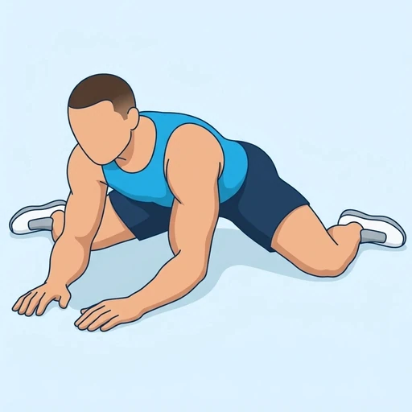

Frog Stretch
A floor stretch for the inner thighs and groin: on your hands and knees, you slide the knees wide apart with the feet turned out and rock your hips back toward your heels. The wide knees open the adductors while the hips stay low.
Upper legs · Bodyweight · Beginner

Muscles worked by the Frog Stretch
Primary
Secondary
Also called: hip adductors, inner thigh, adductor muscles, groin.
Equipment
No equipment — this is a bodyweight exercise.
How to do the Frog Stretch
- Start on your hands and knees on the floor, with your wrists under your shoulders.
- Slide your knees out to the sides as far as is comfortable and turn your feet out, keeping your shins in line with your knees.
- Lower onto your forearms and keep your back straight, not rounded.
- Rock your hips back toward your heels until you feel a strong stretch along your inner thighs.
- Hold the position and breathe slowly, keeping your hips level.
- Come out by sliding the knees together and sitting back before you stand.
Form tips
- Put a folded towel or mat under your knees if the floor is hard.
- Go only as wide as you can keep your hips level; letting the pelvis tilt takes the stretch out of the inner thighs.
- Rock back slowly and ease out of the position if you feel any pinching at the front of the hips.
At a glance
| Body part | Upper legs |
|---|---|
| Category | Stretching |
| Force type | Static |
| Mechanic | Isolation |
| Difficulty | Beginner |
| Equipment | Bodyweight |
| Goals | Mobility |
| Tags | Mobility, Stretching |
| MET | 5.0 (metabolic equivalent, for calorie estimates) |
| Unilateral | No |
| Bodyweight | Yes |
| Dataset id | frog-stretch |
Frog Stretch in German & Spanish
| German | Frosch-Dehnung |
|---|---|
| Spanish | Estiramiento de la Rana |
Descriptions, instructions and tips ship in all three languages in the JSON.
Related exercises
Exercise data (JSON)
The record below is exactly what exercises.json ships for this exercise — names, descriptions, instructions and tips in English, German and Spanish.
{
"id": "frog-stretch",
"name_en": "Frog Stretch",
"name_de": "Frosch-Dehnung",
"name_es": "Estiramiento de la Rana",
"description_en": "A floor stretch for the inner thighs and groin: on your hands and knees, you slide the knees wide apart with the feet turned out and rock your hips back toward your heels. The wide knees open the adductors while the hips stay low.",
"description_de": "Eine Dehnung am Boden für die Oberschenkelinnenseiten und die Leiste: Im Vierfüßlerstand schiebst du die Knie weit auseinander, die Füße nach außen gedreht, und schaukelst die Hüfte zurück Richtung Fersen. Die weiten Knie öffnen die Adduktoren, während die Hüfte tief bleibt.",
"description_es": "Un estiramiento en el suelo para la cara interna de los muslos y la ingle: a cuatro patas, deslizas las rodillas muy separadas con los pies girados hacia fuera y llevas las caderas hacia atrás en dirección a los talones. Las rodillas abiertas estiran los aductores mientras las caderas se mantienen bajas.",
"category": "stretching",
"force_type": "static",
"mechanic": "isolation",
"difficulty": "beginner",
"body_part": "upper_legs",
"primary_muscles": [
"adductors"
],
"secondary_muscles": [
"gluteus_maximus",
"hip_flexors"
],
"goals": [
"mobility"
],
"tags": [
"mobility",
"stretching"
],
"is_unilateral": false,
"is_bodyweight": true,
"instructions_en": [
"Start on your hands and knees on the floor, with your wrists under your shoulders.",
"Slide your knees out to the sides as far as is comfortable and turn your feet out, keeping your shins in line with your knees.",
"Lower onto your forearms and keep your back straight, not rounded.",
"Rock your hips back toward your heels until you feel a strong stretch along your inner thighs.",
"Hold the position and breathe slowly, keeping your hips level.",
"Come out by sliding the knees together and sitting back before you stand."
],
"instructions_de": [
"Beginne im Vierfüßlerstand auf dem Boden, die Handgelenke unter den Schultern.",
"Schiebe die Knie so weit zur Seite, wie es angenehm ist, und drehe die Füße nach außen; die Schienbeine bleiben in einer Linie mit den Knien.",
"Senke dich auf die Unterarme ab und halte den Rücken gerade, nicht rund.",
"Schaukle die Hüfte zurück Richtung Fersen, bis du eine kräftige Dehnung entlang der Oberschenkelinnenseiten spürst.",
"Halte die Position und atme langsam, die Hüfte dabei waagerecht.",
"Gehe heraus, indem du die Knie zusammenschiebst und dich zurücksetzt, bevor du aufstehst."
],
"instructions_es": [
"Empieza a cuatro patas en el suelo, con las muñecas bajo los hombros.",
"Desliza las rodillas hacia los lados hasta donde te resulte cómodo y gira los pies hacia fuera, manteniendo las espinillas en línea con las rodillas.",
"Baja sobre los antebrazos y mantén la espalda recta, sin redondearla.",
"Lleva las caderas hacia atrás, hacia los talones, hasta sentir un estiramiento intenso a lo largo de la cara interna de los muslos.",
"Mantén la posición y respira despacio, con las caderas niveladas.",
"Sal de la postura juntando las rodillas y sentándote hacia atrás antes de ponerte de pie."
],
"tips_en": [
"Put a folded towel or mat under your knees if the floor is hard.",
"Go only as wide as you can keep your hips level; letting the pelvis tilt takes the stretch out of the inner thighs.",
"Rock back slowly and ease out of the position if you feel any pinching at the front of the hips."
],
"tips_de": [
"Lege ein gefaltetes Handtuch oder eine Matte unter die Knie, wenn der Boden hart ist.",
"Gehe nur so weit auseinander, wie du die Hüfte waagerecht halten kannst; kippt das Becken, geht die Dehnung aus den Oberschenkelinnenseiten verloren.",
"Schaukle langsam zurück und gehe behutsam aus der Position, wenn du ein Zwicken an der Hüftvorderseite spürst."
],
"tips_es": [
"Coloca una toalla doblada o una colchoneta bajo las rodillas si el suelo es duro.",
"Abre las rodillas solo hasta donde puedas mantener las caderas niveladas; si dejas que la pelvis se incline, el estiramiento sale de la cara interna de los muslos.",
"Lleva las caderas hacia atrás despacio y sal de la postura con suavidad si notas algún pellizco en la parte delantera de las caderas."
],
"met": 5.0,
"images": {
"flat": {
"main": "images/flat/frog-stretch-main.webp"
}
}
}Fetch just this exercise
const { exercises } = await fetch(
"https://exercise-dataset.com/exercises.json"
).then(r => r.json());
const ex = exercises.find(e => e.id === "frog-stretch");Free for personal and commercial in-app use with attribution (“Exercise data by RepDB”) — see the license and ready-made attribution snippets. Redistributing the data as a dataset or API is not permitted.